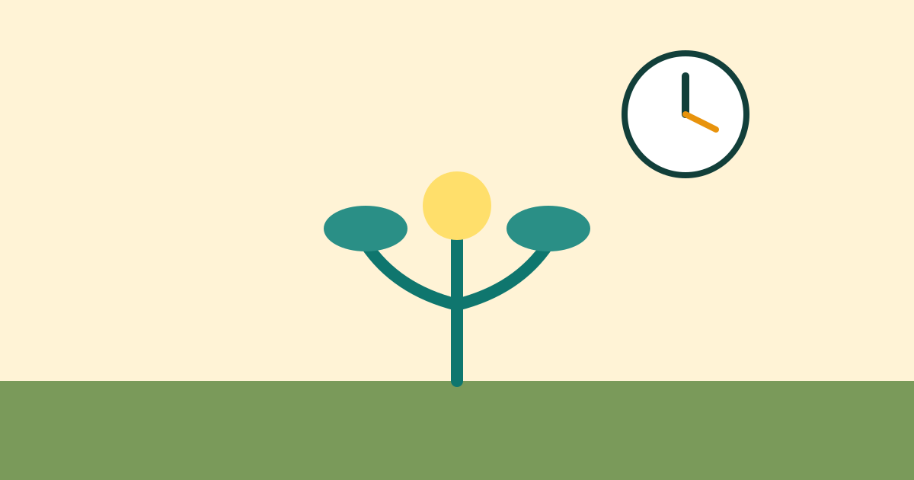

How to Learn a New Skill in 30 Minutes a Day

Learning a new skill often sounds like a large commitment, so many people wait for free weekends or perfect conditions that never arrive. In reality, thirty minutes a day is enough to make steady progress, if the time is used well. A language, an instrument, drawing, coding, cooking, or public speaking can all grow through short, regular practice. The secret is not long hours, but a clear focus, daily repetition, and patience over weeks and months.
Choose One Skill and a Clear First Goal
Start by choosing only one skill. Trying to learn several skills at once splits your time and attention, and progress in each one becomes slow. Pick the skill that matters most to you right now, or the one you are most likely to practise daily. Interest matters, because you will need to return to the skill even on days when motivation is low.
Next, set a clear first goal for the next four weeks. Instead of “learn Spanish,” choose “hold a simple five-minute conversation about daily life.” Instead of “learn to draw,” choose “draw a simple portrait with correct proportions.” A clear goal helps you choose what to practise and lets you see progress. You can set a new goal after the first one is reached.
Split Thirty Minutes Into Three Parts
A simple structure makes thirty minutes more useful than unstructured practice. Spend the first five minutes reviewing yesterday's work. Recall what you learned, repeat a short exercise, or look at your notes. This warm-up connects today's practice to what you already know and prevents old learning from fading.
Use the next twenty minutes for focused practice on one small topic. Work on a single exercise, a short lesson, or a small project, rather than jumping between many topics. For example, practise one grammar pattern, one song section, or one drawing technique. Finish the last five minutes by noting what you learned, what was difficult, and what to practise tomorrow. This short note turns each session into a record of progress.
Make Practice a Daily Habit
Thirty minutes is easier to protect when it happens at the same time each day. Choose a time that fits your routine, such as before breakfast, during lunch, or after work, and treat it like a regular appointment. Place your materials ready the night before, so you can start without delay. A fixed time and a ready setup remove the need to decide each day.
If you miss a day, do not try to make up the time by practising for hours the next day. Simply return to the next thirty-minute session. Consistency over weeks matters more than perfection in any single week. Even a short session on a busy day keeps the habit alive and keeps the skill fresh in your mind.
Review Progress and Increase Difficulty Slowly
Once a week, spend a few minutes reviewing your progress. Look at your notes, try an earlier exercise again, and notice what has become easier. Weekly review shows growth that daily practice can hide, because improvement is often gradual. It also helps you decide what to practise next, instead of repeating only what you already know well.
Increase difficulty slowly. When a task becomes easy, move to a slightly harder version, a longer exercise, or a small real project. For example, move from short phrases to a full conversation, or from copying a drawing to creating your own. Small increases in difficulty keep practice interesting without making it frustrating. If a new level feels too hard, return to a simpler version for a few days and try again.
Common Mistakes
One common mistake is watching lessons without practising. Watching feels like learning, but skill grows through doing. Spend most of your thirty minutes practising, not only watching or reading about the skill. Another mistake is changing skills too often. Progress needs time, so give one skill at least a month of regular practice before deciding it is not for you.
Many learners also practise only what is easy and avoid difficult parts. Growth happens at the edge of your ability, so include some challenging practice in each session, even if it feels uncomfortable. Finally, avoid comparing your progress to experts. Compare your current work to your work from a month ago. That comparison shows real progress and keeps motivation realistic.
Frequently Asked Questions
Is thirty minutes really enough?
Yes, for steady progress over time. Thirty focused minutes daily add up to more than three hours a week. The key is regular, active practice. Short daily sessions often beat rare, very long sessions, because repetition helps memory and skill stick.
What if I only have twenty minutes on some days?
Use the twenty minutes you have. A shorter session is far better than no session. Keep the same structure in miniature: a short review, focused practice, and a one-line note about what to do next.
How do I stay motivated after the first weeks?
Track small wins, review your early work to see improvement, and set a new small goal every few weeks. Practising with a friend, joining a group, or sharing your work can also help you stay consistent when motivation drops.
When should I move to a harder level?
Move up when the current level feels comfortable most of the time, not perfect every time. A small step up should feel challenging but possible. If it feels impossible, practise the current level a little longer and try again.
Conclusion
You do not need hours of free time to learn a new skill. You need one skill, one clear goal, and thirty focused minutes a day, split into review, practice, and a short note. Repeat that simple routine, review weekly, and increase difficulty slowly. Over weeks and months, small daily steps turn into a skill you can actually use.